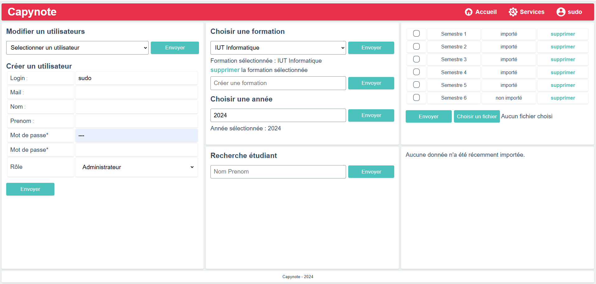

Links
About me
Passionate about software development, I design software, mobile applications and websites. I also run a micro-business specialising in the design and sale of customised keyboards, which reflects my entrepreneurial spirit and passion for technology. I enjoy challenges that allow me to enrich my skills and take part in innovative projects.
Education
BUT Computer Science
IUT Montpellier-Sète
2023-2026
General Baccalaureate
Maths & English Spec
2023
Expertise
I specialise in the design and development of web applications and user interfaces, as well as the design and management of databases. I am experienced in the administration of complex IT communication systems, ensuring reliable and and efficient infrastructures.
I also have expertise in custom keyboard design and assembly, as well as computer building. I am also am passionate about video game development and music composition.
Native French speaker, knowledge of English at B2 level. Holder of a full valid driving licence.
Languages
C#
Python
Java
C
SQL & PLSQL
JavaScript
PHP
Lua
Experience
PicoKeebs.fr
PicoKeebs is my company that specialises in building custom keyboards, including MIDI keyboards for musicians. I developed the online store myself using PHP and design each keyboard from the PCB to the case. My goal is to provide unique, high quality products that combine aesthetics, performance and functionality for tech and music enthusiasts.
C4W.com
I did a 3-month internship at C4W from 13 January to 5 April 2024. C4W is a software development company company specialising in CAD (Computer-Aided Design) solutions for the medical field. During my internship I gained hands-on experience in the development of customised software solutions for medical applications.
Projects
Discover a selection of my projects showcasing group and personal endeavours, mainly from my time at IUT. Each project highlights unique challenges and learning opportunities. Click "View Details" to explore more.
May 2024
-
Jun 2024
SAE Train - Board and Card Game
A dynamic group project in which I developed a board and card game in Java, integrating object-oriented design and a user-friendly interface. This project brought together creativity and technical expertise to create a compelling gaming experience.
Project Context: The goal was to simulate a board and card game, incorporating features like card deck management, action execution, and rail placement mechanics.
My Role & Responsibilities: Designed the system's architecture, implemented the game interface, and ensured seamless mechanics for deck and board interactions.
Technologies Used: Java, JavaFX, test-driven development, and advanced data structures.
Skills Developed:
- Applied algorithmic principles to implement game mechanics (CE1.03).
- Ensured code quality and documentation standards were met (C21.04).
- Chose appropriate technical resources for efficient implementation (CE1.06).
- Designed and implemented functional and non-functional specifications from requirements (AC11).
- Adopted best practices for design, programming, and testing to validate application quality.
- Used complex data structures to solve problems (AC1).
- Enhanced understanding of data and code security principles (AC3).
- Emphasized user accessibility and ergonomic design principles (AC2).
Key Takeaways: Strengthened Java proficiency and gained valuable experience in creating scalable, test-driven applications.

Aug 2024
-
Sept 2024
Personal Project - Terraria-Like in C
An exciting solo project inspired by Terraria, where I built a game with procedural world generation using cellular automata. This journey deepened my understanding of optimization, memory management, and algorithmic design.
Project Context: Focused on implementing random terrain generation and gameplay inspired by the sandbox mechanics of Terraria.
My Role & Responsibilities: Developed the core game logic, implemented procedural generation using cellular automata, and optimized resource handling.
Technologies Used: C, Raylib, and custom algorithms for efficient world generation.
Skills Developed:
- Designed and implemented advanced algorithms for terrain generation (CE1.03).
- Optimized memory usage for handling large datasets (AC3).
- Chose and utilized appropriate technical resources for graphical rendering and game mechanics (CE1.06).
- Adopted best practices for code quality and documentation (C21.04).
- Developed scalable solutions by applying principles of algorithmic complexity and data structure optimization (AC1).
- Strengthened understanding of accessibility and ergonomics through gameplay design (AC2).
- Tested and validated the application’s functionality through iterative development cycles.
Key Takeaways: Enhanced my C programming skills, particularly in algorithmic problem-solving and memory-efficient code.
Sept 2024
-
Dec 2024
SAE 3A - Web App for Student Academic Tracking
A comprehensive web application developed in PHP and MySQL to streamline student academic tracking. This project enhanced my web development and database optimization skills while emphasizing the importance of user-focused design.
Project Context: Designed to facilitate student record management, grade tracking, and eligibility verification for academic programs.
My Role & Responsibilities: Implemented the database schema, optimized queries, and developed the front-end and back-end following the MVC pattern.
Technologies Used: PHP, MySQL, and JavaScript for front-end interactivity.
Skills Developed:
- Formalized client and user requirements and implemented functional and non-functional specifications (AC11).
- Designed and optimized relational database schemas for efficient data management (CE1.06).
- Implemented secure and scalable back-end logic using PHP and MySQL (AC3).
- Applied principles of accessibility and ergonomics to create a user-friendly interface (AC2).
- Adopted best coding and documentation practices to ensure maintainability (C21.04).
- Validated application quality through rigorous testing (AC3).
- Organized data retrieval and presentation using dynamic web pages and database integration (CE1.03).
- Optimized queries and database structures to handle large-scale data (AC1).
Key Takeaways: Improved my understanding of scalable web application design and optimized database operations for large data sets.
Hobbies
Programming, Code Game Jam, custom keyboards, hardware, music, badminton, travel.
Contact
You can reach me directly via email at
antonin.chabaud-pech@etu.umontpellier.fr
Alternatively, feel free to use the contact form below to get in touch.
Quotes
Here’s a random quote for you to ponder before leaving:
“A bug is not an error, it's an undiscovered feature.”
Douglas Adams
Sign-off
Thank you for visiting!
I'm always looking forward to collaborating on innovative projects and taking on new challenges. Feel free to reach out if you'd like to connect or discuss an idea!